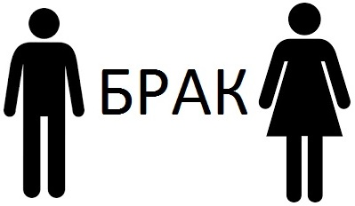
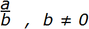
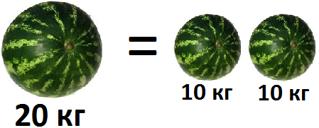
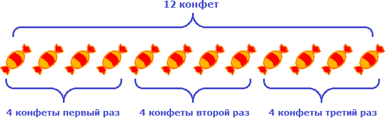
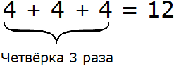
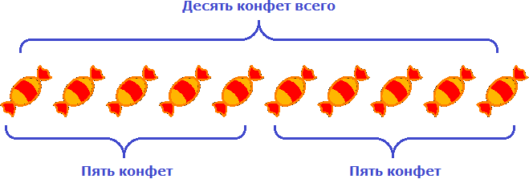

Основные операции, которые используются в математике это сложение, вычитание, умножение и деление.
Помимо этих операций существуют ещё и операции отношения такие как: равно (=), больше (>), меньше (<), больше или равно (≥), меньше или равно (≤), не равно (≠).
Вообще, операции можно разделить на два вида:
- операции действия;
- операции отношения.
Операции действия это:
- сложение (+)
- вычитание (-)
- умножение (×)
- деление ( ÷ ).
Операции отношения это:
- равно (=)
- больше (>)
- меньше (<)
- больше или равно (≥)
- меньше или равно (≤)
- не равно (≠).
Операции отношения
Начнем с операций отношения. Слово «отношение» говорит само за себя. Примеры из жизни: что-то имеет отношение к чему-то. Папа имеет отношение к маме. Это отношение называют браком:
Примеров отношений множество. Можно сказать, что наш красивый мир, который развивается гармонично, тоже состоит из отношений.
Если пятёрка больше тройки, то мы говорим, что «пятерка больше по отношению к тройке» и записываем как 5 > 3 (читается: пять больше, чем три). Острый угол знака отношения должен быть направлен в сторону меньшего числá. В данном примере число 3 меньше, чем число 5, поэтому острый угол знака отношения направлен в сторону числа 3.
Ещё пример. Число 11 меньше, чем число 15. Эту фразу можно записать так:
11 < 15
В математике с помощью отношений можно записывать законы, формулы, уравнения и функции. Можно записать, что одно выражение равно другому, либо какое-то действие недопустимо по отношению к какому-нибудь объекту, числу, закону.
Например, знаменитая фраза «на ноль делить нельзя» записывается так:

Не будем опережать события и забегать вперёд. Просто скажем, что в этом выражении вместо a и b могут стоять любые числа. Но потом говорится, что b не должно быть равным нулю.
Знак равенства = стáвится между величинами и говорит о том, что эти величины равны между собой.
Например, «пять равно пять» записывается как 5 = 5. Понятно, что две пятерки равны между собой. Помимо привычных для нас чисел, знáком равенства могут соединяться более сложные выражения, например: 9 + x + y = 4 + 5 + x + y.
Ещё пример: если один большой арбуз весит 20 кг, а два маленьких арбуза весят по 10 кг каждый, то между арбузом в 20 кг и двумя арбузами по 10 кг можно поставить знак равенства. Это отношение можно прочитать так: «один арбуз весом в 20 килограмм равен весу двух арбузов, каждый из которых весит 10 кг». Ведь 20 кг = 10 кг + 10 кг.

Знак не равно ≠ ставится между величинами тогда, когда они не равны между собой.
Например, 5 ≠ 7. Ясно, что пятёрка не равна семёрке. Ещё примеры: отличник не равен двоечнику, собака не равна кошке, мандарин это не апельсин:
отличник ≠ двоечник
собака ≠ кошка
мандарин ≠ апельсин
Вы можете осмотреться вокруг себя и найти множество примеров отношений, которые можно истолковать с точки зрения математики.
Операция сложения
Операция сложения обозначается знаком «плюс» (+) и используется, когда складывают числа.
Числа, которые складывают называются слагаемыми. Число, которое получается в результате их сложения, называется суммой.
Например, сложим числа 3 и 2.
Записываем 3 + 2 = 5
В этом примере 3 − это слагаемое, 2 − второе слагаемое, 5 − сумма.
В будущем придётся складывать довольно большие числа. Но сложение этих больших чисел в конечном итоге будет сводиться к тому, чтобы сложить маленькие.
Поэтому нужно научиться складывать маленькие числа в диапазоне от 0 до 9. Например:
2 + 2 = 4
3 + 4 = 7
7 + 2 = 9
0 + 7 = 7
Можете потренироваться, записав в тетради несколько простых примеров. Поверьте, ничего постыдного в этом нет.
Операция вычитания
Операция вычитания обозначается знаком «минус» (−) и используется когда из одного числа вычитают другое.
Число, из которого вычитают другое число, называется уменьшаемым. Число, которое вычитают из уменьшаемого числа, называется вычитаемым. Число, которое получается в результате, называется разностью.
Например, вычтем из числа 10 число 2.
10 − 2 = 8
В этом примере число 10 − это уменьшаемое, число 2 − вычитаемое, а число 8 − разность.
Операция умножения
Обозначается знаком умножения (×) и используется когда одно число умножается на другое. Слово умножение говорит само за себя — какое-то число увеличивается в определенное количество раз, то есть мнóжится.
Например, запись 4 × 3 означает, что четверка в ходе операции умножения будет увеличена в три раза.
Число, которое увеличивают, называется множимым. Число, которое показывает во сколько раз нужно увеличить множимое, называется множителем. Число, которое получается в результате называется произведением.
Например, умножим число 4 на 3.
4 × 3 = 12
В этом примере 4 − это множимое, 3 − множитель, 12 − произведение.
Запись 4 × 3 можно понимать как «повторить число 4 три раза». Например, если у нас имеются четыре конфеты и мы повторим их три раза, то полýчится двенадцать конфет:

Другими словами, умножение 4 на 3 можно представить как сумму трёх четвёрок:

Умножение можно понимать и другим образом, а именно как взятие чего-то определенное количество раз.
Допустим, в вазе лежат конфеты. Возьмём четыре конфеты один раз:
4 конф. × 1 = 4 конф.
У нас в руках окажется четыре конфеты.
Попробуем взять четыре конфеты 2 раза:
4 конф × 2 = 8 конф.
У нас в руках окажется восемь конфет.
Попробуем взять четыре конфеты ноль раз, то есть ни разу:
4 × 0 = 0
У нас на руках не окажется конфет, поскольку мы ни разу их не взяли. Поэтому умножение любого числа на ноль даёт в ответе ноль.
В некоторых книгах множимое и множитель называют одним общим словом — сомножители. Например, в записи 4 × 3 множимым является 4, а множителем 3, но эти два числа ещё можно назвать сомножителями. Ошибкой это не будет.
В будущем мы будем умножать довольно большие числа. Но умножение больших чисел свóдится к тому, чтобы умножить маленькие. Поэтому сначала нужно научиться умножать маленькие числа. Благо, они уже перемножены и записаны в специальную таблицу, которую называют таблицей умножения. Если вы живёте в России или в странах бывшего СССР, то наверняка знаете эту таблицу наизусть. Если не знаете, обязательно выучите!
Операция деления
Обозначается знаком деления (÷ или : ) и используется когда делят числа.
Число, которое делят называют делимым. Число, которое указывает на сколько частей делят делимое, называется делителем. Число, которое получается в результате, называется частным.
Например, разделим число 10 на 2.
10 : 2 = 5
В этом примере число 10 − это делимое, число 2 − делитель, число 5 − частное.
Если у нас имеются десять конфет и мы разделим их на две равные части, то в каждой части полýчится по пять конфет:

Так можно понять смысл записи 10 : 2 = 5.
Задания для самостоятельного решения
Большинство людей решат эти задания в уме что конечно похвально. Однако, рекомендуется выполнить эти задания именно в тетради, взяв в руку карандаш. К математике следует привыкать посредством решения простых примеров.